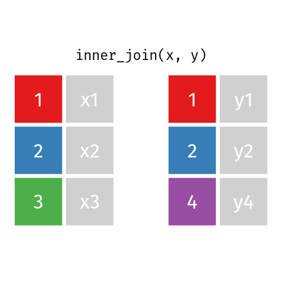

35 Manipuler des données en mode tidyverse
Le méta-module tidyverse regroupe une collection de précieux modules pour l’analyse de données en R. Il permet d’importer des données dans votre session de travail avec readr, de les explorer avec ggplot2, de les transformer avec tidyr et dplyr et de les exporter aevc readr. Les tableaux de classe data.frame, comme ceux de la plus moderne classe tibble, peuvent être manipulés à travers le flux de travail pour l’analyse et la modélisation (chapitres suivants). Comme c’était le cas pour le chapitre sur la visualisation, ce chapitre est loin de couvrir les nombreuses fonctionnalités qui sont offertes dans le tidyverse.
35.1 Importer vos données dans voter session de travail
Supposons que vous avec bien organisé vos données en mode tidy. Pour les importer dans votre session et commencer à les inspecter, vous lancerez une des commandes du module readr, décrites dans la documentation dédiée.
read_csv()si le séparateur de colonne est une virguleread_csv2()si le séparateur de colonne est un point-virgule et que le séparateur décimal est une virguleread_tsv()si le séparateur de colonne est une tabulationread_table()si le séparateur de colonne est un espace blancread_delim()si le séparateur de colonne est un autre caractère (comme le point-virgule) que vous spécifierez dans l’argumentdelim = ";"
Les principaux arguments sont les suivants.
file: le chemin vers le fichier. Ce chemin peut aussi bien être une adresse locale (data/…) qu’une adresse internet (https://…).delim: le symbole délimitant les colonnes dans le cas deread_delim.col_names: si TRUE, la première ligne est l’entête du tableau, sinon FALSE. Si vous spécifiez un vecteur numérique, ce sont les numéros des lignes utilisées pour le nom de l’entête. Si vous utilisez un vecteur de charactères, ce sont les noms des colonnes que vous désirez donner à votre tableau.na: le symbole spécifiant une valeur manquante. L’argumentna=''signifie que les cellules vides sont des données manquantes. Si les valeurs manquantes ne sont pas uniformes, vous pouvez les indiquer dans un vecteur, par exemplena = c("", "NA", "NaN", ".", "-").local: cet argument prend une fonctionlocal()qui peut inclure des arguments de format de temps, mais aussi d’encodage (voir documentation)
D’autres arguments peuvent être spécifiés au besoin, et les répéter ici dupliquerait l’information de la documentation de la fonction read_csv de readr.
Je déconseille d’importer des données en format xls ou xlsx. Si toutefois cela vous convient, je vous réfère au module readxl.
L’aide-mémoire de readr est à afficher près de soi.
 Aide-mémoire de readr, source: https://www.rstudio.com/resources/cheatsheets/
Aide-mémoire de readr, source: https://www.rstudio.com/resources/cheatsheets/
Nous allons charger des données de culture de la chicouté (Rubus chamaemorus), un petit fruit nordique, tiré de Parent et al. (2013). Ouvrons d’abord le fichier pour vérifier les séparateurs de colonne et de décimale.

Le séparateur de colonne est un point-virgule et le décimal est une virgule.
Avec Atom, mon éditeur texte préféré, je vais dans Edit > Select Encoding et j’obtiens bien le UTF-8.

Nous allons donc utiliser read_csv2() avec ses arguments par défaut.
## Using ',' as decimal and '.' as grouping mark. Use read_delim() for more control.## Parsed with column specification:
## cols(
## .default = col_double(),
## CodeTourbiere = col_character(),
## Ordre = col_character(),
## Traitement = col_character(),
## DemiParcelle = col_character(),
## SousTraitement = col_character()
## )## See spec(...) for full column specifications.Quelques commandes utiles inspecter le tableau:
head()présente l’entête du tableau, soit ses 6 premières lignesstr()etglimpse()présentent les variables du tableau et leur type -glimpse()est la fonction tidyverse etstr()est la fonction classique (je préfèrestr())summary()présente des statistiques de base du tableaunames()oucolnames()sort les noms des colonnes sous forme d’un vecteurdim()donne les dimensions du tableau,ncol()son nombre de colonnes etnrow()son nombre de lignesskimest une fonction du module skimr montrant un portrait graphique et numérique du tableau
Extra 1. Plusieurs modules ne se trouvent pas dans les dépôt CRAN, mais sont disponibles sur GitHub. Pour les installer, installez d’abord le module devtools disponible sur CRAN. Vous pourrez alors installer les packages de GitHub comme on le fait avec le package skimr.
Extra 2. Lorsque je désire utiliser une fonction, mais sans charger le module dans la session, j’utilise la notation module::fonction. Comme dans ce cas, pour skimr.
## Skim summary statistics
## n obs: 90
## n variables: 31
##
## -- Variable type:character ---------------------------------------------------------
## variable missing complete n min max empty n_unique
## CodeTourbiere 0 90 90 1 4 0 12
## DemiParcelle 50 40 90 4 5 0 2
## Ordre 0 90 90 1 2 0 20
## SousTraitement 50 40 90 1 7 0 3
## Traitement 50 40 90 6 11 0 2
##
## -- Variable type:numeric -----------------------------------------------------------
## variable missing complete n mean sd
## Al_pourc 0 90 90 0.0027 0.0013
## B_pourc 0 90 90 0.0031 0.00067
## C_pourc 0 90 90 50.28 1.61
## Ca_pourc 0 90 90 0.39 0.1
## Cu_pourc 0 90 90 0.00041 0.00064
## Fe_pourc 0 90 90 0.015 0.0059
## FemelleAvorte_nombre_m2 4 86 90 8.49 14.52
## FemelleFruit_nombre_m2 18 72 90 19.97 23.79
## ID 0 90 90 45.5 26.12
## K_pourc 0 90 90 0.89 0.27
## Latitude_m 0 90 90 5701839.86 1915.5
## Longitude_m 0 90 90 485295.54 6452.33
## Mg_pourc 0 90 90 0.5 0.085
## Mn_pourc 0 90 90 0.033 0.025
## N_pourc 0 90 90 2.2 0.4
## P_pourc 0 90 90 0.14 0.037
## Rendement_g_5m2 50 40 90 13.33 21.56
## S_pourc 0 90 90 0.13 0.039
## Site 0 90 90 6.33 5.49
## SterileFleur_nombre_m2 4 86 90 0.26 0.71
## TotalFemelle_nombre_m2 4 86 90 27.53 29.83
## TotalFloral_nombre_m2 4 86 90 52.08 40.41
## TotalMale_nombre_m2 4 86 90 24.4 26.87
## TotalRamet_nombre_m2 0 90 90 251.26 156.06
## TotalVegetatif_nombre_m2 4 86 90 199.02 139.13
## Zn_pourc 0 90 90 0.0067 0.0021
## p0 p25 p50 p75 p100
## 9e-04 0.0019 0.0024 0.0033 0.0093
## 0.0018 0.0026 0.0032 0.0035 0.0042
## 46.72 49.14 50.45 51.58 53.83
## 0.19 0.32 0.37 0.44 0.88
## 3.7e-05 3.7e-05 0.00021 0.00046 0.0042
## 0.0091 0.011 0.014 0.017 0.052
## 0 1.27 3.07 10.14 76.8
## 0.4 7.64 11.46 22.83 157.88
## 1 23.25 45.5 67.75 90
## 0.35 0.69 0.86 1.13 1.54
## 5695688 5701868.5 5702129 5702537 5706394
## 459873 485927 486500 486544.75 491955
## 0.36 0.45 0.48 0.52 0.86
## 0.0023 0.012 0.028 0.05 0.1
## 1.53 1.89 2.12 2.58 3.1
## 0.071 0.12 0.14 0.16 0.23
## 0 0 0.95 15.63 72.44
## 0.07 0.11 0.13 0.14 0.28
## 1 2 4 9 20
## 0 0 0 0 3.82
## 2.55 10.34 17.19 31.96 187.17
## 4.8 22.92 43 69.52 198.62
## 0 3.3 15.28 36.51 104.41
## 40.74 122.7 212.92 347.8 651.9
## 22.92 86.26 161.25 263.78 580.6
## 0.0033 0.0055 0.0063 0.0072 0.016
## hist
## <U+2586><U+2587><U+2585><U+2582><U+2581><U+2581><U+2581><U+2581>
## <U+2583><U+2582><U+2585><U+2583><U+2583><U+2587><U+2581><U+2585>
## <U+2582><U+2583><U+2586><U+2583><U+2585><U+2587><U+2582><U+2581>
## <U+2582><U+2587><U+2587><U+2583><U+2582><U+2581><U+2581><U+2581>
## <U+2587><U+2581><U+2581><U+2581><U+2581><U+2581><U+2581><U+2581>
## <U+2587><U+2585><U+2582><U+2581><U+2581><U+2581><U+2581><U+2581>
## <U+2587><U+2582><U+2581><U+2581><U+2581><U+2581><U+2581><U+2581>
## <U+2587><U+2582><U+2581><U+2581><U+2581><U+2581><U+2581><U+2581>
## <U+2587><U+2587><U+2587><U+2587><U+2587><U+2587><U+2587><U+2587>
## <U+2583><U+2582><U+2587><U+2586><U+2583><U+2586><U+2582><U+2581>
## <U+2581><U+2581><U+2581><U+2582><U+2587><U+2586><U+2581><U+2581>
## <U+2581><U+2581><U+2581><U+2581><U+2581><U+2581><U+2587><U+2581>
## <U+2583><U+2587><U+2586><U+2582><U+2581><U+2581><U+2581><U+2581>
## <U+2587><U+2583><U+2583><U+2583><U+2582><U+2581><U+2581><U+2581>
## <U+2583><U+2586><U+2587><U+2586><U+2582><U+2585><U+2583><U+2582>
## <U+2586><U+2582><U+2587><U+2587><U+2587><U+2583><U+2582><U+2581>
## <U+2587><U+2581><U+2581><U+2581><U+2581><U+2581><U+2581><U+2581>
## <U+2582><U+2586><U+2587><U+2582><U+2581><U+2581><U+2581><U+2581>
## <U+2587><U+2585><U+2581><U+2581><U+2581><U+2581><U+2581><U+2581>
## <U+2587><U+2581><U+2581><U+2581><U+2581><U+2581><U+2581><U+2581>
## <U+2587><U+2582><U+2581><U+2581><U+2581><U+2581><U+2581><U+2581>
## <U+2587><U+2587><U+2583><U+2582><U+2581><U+2581><U+2581><U+2581>
## <U+2587><U+2583><U+2582><U+2582><U+2581><U+2581><U+2581><U+2581>
## <U+2587><U+2583><U+2587><U+2582><U+2582><U+2582><U+2582><U+2581>
## <U+2587><U+2587><U+2586><U+2583><U+2582><U+2582><U+2582><U+2581>
## <U+2582><U+2587><U+2585><U+2581><U+2581><U+2581><U+2581><U+2581>Exercice. Inspectez le tableau.
35.3 Le format long et le format large
Dans le tableau chicoute, chaque élément possède sa propre colonne. Si l’on voulait mettre en graphique les boxplot des facettes de concentrations d’azote, de phosphore et de potassium dans les différentes tourbières, il faudrait obtenir une seule colonne de concentrations.
Pour ce faire, nous utiliserons la fonction gather(). Le premier argument est le nom de la colonne des variables, le deuxième est le nom de la nouvelle colonne des valeurs. La suite consiste à décrire les colonnes à inclure ou à exclulre. Dans le cas qui suit, j’exclue CodeTourbiere de la refonte j’utilise sample_n() pour présenter un échantillon du résultat.
chicoute_long <- chicoute %>%
select(CodeTourbiere, N_pourc, P_pourc, K_pourc) %>%
gather(key = element, value = concentration, -CodeTourbiere)
chicoute_long %>% sample_n(10)## # A tibble: 10 x 3
## CodeTourbiere element concentration
## <chr> <chr> <dbl>
## 1 2 K_pourc 1.34
## 2 2 K_pourc 0.831
## 3 2 K_pourc 1.06
## 4 2 P_pourc 0.166
## 5 NTP K_pourc 0.398
## 6 2 N_pourc 2.70
## 7 BEAU N_pourc 1.72
## 8 WTP K_pourc 0.557
## 9 BS2 N_pourc 2.44
## 10 BS2 P_pourc 0.118L’opération inverse est spread(). Pour que cette opération fonctionne, spread() a besoin d’une colonne ayant un identifiant unique.
Nous pouvons enlever cet identifiant une fois l’opération effectuée.
chicoute_large <- chicoute_long %>%
spread(key=element, value=concentration, fill=0) %>%
select(-ID)
chicoute_large %>% sample_n(10)## # A tibble: 10 x 4
## CodeTourbiere K_pourc N_pourc P_pourc
## <chr> <dbl> <dbl> <dbl>
## 1 1 0 2.12 0
## 2 1 0 1.82 0
## 3 BEAU 0.947 0 0
## 4 1 0 2.22 0
## 5 MR 0.934 0 0
## 6 MR 0 2.06 0
## 7 MR 0 2.09 0
## 8 2 0 2.78 0
## 9 BS2 0 2.44 0
## 10 1 0.752 0 0Sans créer de nouveau tableau, il est possible de créer le graphique dans un seu pipeline.
chicoute %>%
select(CodeTourbiere, N_pourc, P_pourc, K_pourc) %>%
gather(key = element, value = concentration, -CodeTourbiere) %>%
ggplot(mapping = aes(x = CodeTourbiere, y = concentration)) +
facet_grid(element ~ ., scales = 'free') +
geom_boxplot()
35.4 Combiner des tableaux
Nous avons introduit plus haut la notion de base de données. Nous voudrions peut-être utiliser le code des tourbières pour inclure leur nom, le type d’essai mené à ces tourbières, etc. Importons d’abord le tableau des noms liés aux codes.
## Using ',' as decimal and '.' as grouping mark. Use read_delim() for more control.## Parsed with column specification:
## cols(
## Tourbiere = col_character(),
## CodeTourbiere = col_character(),
## Type = col_character(),
## TypeCulture = col_character()
## )## # A tibble: 11 x 4
## Tourbiere CodeTourbiere Type TypeCulture
## <chr> <chr> <chr> <chr>
## 1 Beaulieu BEAU calibration naturel
## 2 Brador Path BP calibration naturel
## 3 Lichen (BS2E) 2 validation cultive sec
## 4 Mannys Brook MB calibration naturel
## 5 Middle Bay Road MR calibration naturel
## 6 North Est of Smelt Pond NESP calibration naturel
## 7 North of Blue Moon NBM calibration naturel
## 8 South of Smelt Pond SSP calibration naturel
## 9 Sphaigne (BS2F) BS2 validation cultive sec
## 10 Sphaigne (BS2F) 1 calibration naturel
## 11 West of Trout Pond WTP calibration naturelNotre information est organisée en deux tableaux, liés par la colonne CodeTourbiere. Comment fusionner l’information pour qu’elle puisse être utilisée dans son ensemble? La fonction left_join effectue cette opération typique avec les bases de données.
chicoute_merge <- left_join(x = chicoute, y = tourbieres, by = "CodeTourbiere")
# ou bien chicoute %>% left_join(y = tourbieres, by = "CodeTourbiere")
chicoute_merge %>% sample_n(4)## # A tibble: 4 x 34
## ID CodeTourbiere Ordre Site Traitement DemiParcelle SousTraitement
## <dbl> <chr> <chr> <dbl> <chr> <chr> <chr>
## 1 81 1 4 8 temoin right Cu
## 2 83 1 5 9 fertilisa~ right Control
## 3 2 BEAU A 2 <NA> <NA> <NA>
## 4 66 1 1 1 fertilisa~ left B
## # ... with 27 more variables: Latitude_m <dbl>, Longitude_m <dbl>,
## # Rendement_g_5m2 <dbl>, TotalRamet_nombre_m2 <dbl>,
## # TotalVegetatif_nombre_m2 <dbl>, TotalFloral_nombre_m2 <dbl>,
## # TotalMale_nombre_m2 <dbl>, TotalFemelle_nombre_m2 <dbl>,
## # FemelleFruit_nombre_m2 <dbl>, FemelleAvorte_nombre_m2 <dbl>,
## # SterileFleur_nombre_m2 <dbl>, C_pourc <dbl>, N_pourc <dbl>,
## # P_pourc <dbl>, K_pourc <dbl>, Ca_pourc <dbl>, Mg_pourc <dbl>,
## # S_pourc <dbl>, B_pourc <dbl>, Cu_pourc <dbl>, Zn_pourc <dbl>,
## # Mn_pourc <dbl>, Fe_pourc <dbl>, Al_pourc <dbl>, Tourbiere <chr>,
## # Type <chr>, TypeCulture <chr>D’autres types de jointures sont possibles, et décrites en détails dans la documentation.
Garrick Aden-Buie a préparé de jolies animations pour décrire les différents types de jointures.
left_join(x, y) colle y à x seulement ce qui dans y correspond à ce que l’on trouve dans x.

right_join(x, y) colle y à x seulement ce qui dans x correspond à ce que l’on trouve dans y.
inner_join(x, y) colle x et y en excluant les lignes où au moins une variable de joint est absente dans x et y.

full_join(x, y)garde toutes les lignes et les colonnes de x et y.

35.5 Opérations sur les tableaux
Les tableaux peuvent être segmentés en éléments sur lesquels on calculera ce qui nous chante.
On pourrait vouloir obtenir:
- la somme avec la function
sum() - la moyenne avec la function
mean()ou la médiane avec la fonctionmedian() - l’écart-type avec la function
sd() - les maximum et minimum avec les fonctions
min()etmax() - un décompte d’occurence avec la fonction
n()oucount()
Par exemple,
## [1] 13.32851En mode classique, pour effectuer des opérations sur des tableaux, on utilisera la fonction apply(). Cette fonction prend, comme arguments, le tableau, l’axe (opération par ligne = 1, opération par colonne = 2), puis la fonction à appliquer.
## C_pourc N_pourc P_pourc K_pourc Ca_pourc
## 5.027911e+01 2.199411e+00 1.388959e-01 8.887000e-01 3.884391e-01
## Mg_pourc S_pourc B_pourc Cu_pourc Zn_pourc
## 4.980142e-01 1.347177e-01 3.090922e-03 4.089891e-04 6.662155e-03
## Mn_pourc Fe_pourc Al_pourc
## 3.345239e-02 1.514885e-02 2.694979e-03Les opération peuvent aussi être effectuées par ligne, par exemple une somme (je garde seulement les 10 premiers résultats).
## [1] 55.64299 55.76767 54.78856 55.84453 57.89671 55.53603 55.62526
## [8] 55.10991 55.06295 55.16774La fonction à appliquer peut être personnalisée, par exemple:
## C_pourc N_pourc P_pourc K_pourc Ca_pourc
## 50.253429104 2.165246915 0.133754530 0.846193827 0.376192724
## Mg_pourc S_pourc B_pourc Cu_pourc Zn_pourc
## 0.491763884 0.129900753 0.003014675 0.000000000 0.006408775
## Mn_pourc Fe_pourc Al_pourc
## 0.024140327 0.014351745 0.002450982Vous reconnaissez cette fonction? C’était la moyenne géométrique (la fonction prod() étant le produit d’un vecteur).
En mode tidyverse, on aura besoin principalement des fonction suivantes:
group_by()pour effectuer des opérations par groupe, l’oprérationgroup_by()sépare le tableau en plusieurs petits tableaux, en attendant de les recombiner. C’est un peu l’équivalent des facettes en ggplot2…summarise()pour réduire plusieurs valeurs en une seule, il applique un calcul sur le tableau ou s’il y a lieu sur chaque petit tableau segmenté. Il en existe quelques variantes.summarise_all()applique la fonction à toutes les colonnessummarise_at()applique la fonction aux colonnes spécifiéessummarise_if()applique la fonction aux colonnes qui resortent commeTRUEselon une opération booléenne
mutate()pour ajotuer une nouvelle colonne- Si l’on désire ajouter une colonne à un tableau, par exemple le sommaire calculé avec
summarise(). À l’inverse, la fonctiontransmute()retournera seulement le résultat, sans le tableau à partir duquel il a été calculé. De même quesummarise(),mutate()ettransmute()possèdent leurs équivalents_all(),_at()et_if().
- Si l’on désire ajouter une colonne à un tableau, par exemple le sommaire calculé avec
arrange()pour réordonner le tableau- On a déjà couvert
arrange()dans le chapitre 3. Rappelons que cette fonction n’est pas une opération sur un tableau, mais plutôt un changement d’affichage en changeant l’ordre d’apparition des données.
- On a déjà couvert
Ces opérations sont décrites dans l’aide-mémoire Data Transformation Cheat Sheet.

Aide-mémoire de dplyr, source: https://www.rstudio.com/resources/cheatsheets/
Pour effectuer des statistiques par colonne, on utilisera summarise_all() étant donnée que l’on désire un sommaire sur toutes les variables sélectionnées. Pour spécifier que l’on désire la moyenne et l’écart-type on inscrit les noms des fonctions dans funs().
## # A tibble: 1 x 26
## C_pourc_mean N_pourc_mean P_pourc_mean K_pourc_mean Ca_pourc_mean
## <dbl> <dbl> <dbl> <dbl> <dbl>
## 1 50.3 2.20 0.139 0.889 0.388
## # ... with 21 more variables: Mg_pourc_mean <dbl>, S_pourc_mean <dbl>,
## # B_pourc_mean <dbl>, Cu_pourc_mean <dbl>, Zn_pourc_mean <dbl>,
## # Mn_pourc_mean <dbl>, Fe_pourc_mean <dbl>, Al_pourc_mean <dbl>,
## # C_pourc_sd <dbl>, N_pourc_sd <dbl>, P_pourc_sd <dbl>,
## # K_pourc_sd <dbl>, Ca_pourc_sd <dbl>, Mg_pourc_sd <dbl>,
## # S_pourc_sd <dbl>, B_pourc_sd <dbl>, Cu_pourc_sd <dbl>,
## # Zn_pourc_sd <dbl>, Mn_pourc_sd <dbl>, Fe_pourc_sd <dbl>,
## # Al_pourc_sd <dbl>On utilisera group_by() pour segmenter le tableau, et ainsi obtenir des statistiques pour chaque groupe.
chicoute %>%
group_by(CodeTourbiere) %>%
select(contains("pourc")) %>%
summarise_all(funs(mean, sd))## Adding missing grouping variables: `CodeTourbiere`## # A tibble: 12 x 27
## CodeTourbiere C_pourc_mean N_pourc_mean P_pourc_mean K_pourc_mean
## <chr> <dbl> <dbl> <dbl> <dbl>
## 1 1 50.7 2.26 0.156 0.880
## 2 2 49.2 2.76 0.181 1.12
## 3 BEAU 51.7 2.00 0.0967 1.12
## 4 BP 51.2 2.05 0.158 0.747
## 5 BS2 52.5 2.08 0.103 1.12
## 6 MB 51.5 2.15 0.109 0.675
## 7 MR 50.6 1.99 0.127 0.830
## 8 NBM 51.6 2.01 0.127 0.854
## 9 NESP 48.3 1.76 0.135 0.945
## 10 NTP 51.3 1.83 0.0873 0.402
## 11 SSP 48.7 1.83 0.130 0.700
## 12 WTP 47.8 1.79 0.0811 0.578
## # ... with 22 more variables: Ca_pourc_mean <dbl>, Mg_pourc_mean <dbl>,
## # S_pourc_mean <dbl>, B_pourc_mean <dbl>, Cu_pourc_mean <dbl>,
## # Zn_pourc_mean <dbl>, Mn_pourc_mean <dbl>, Fe_pourc_mean <dbl>,
## # Al_pourc_mean <dbl>, C_pourc_sd <dbl>, N_pourc_sd <dbl>,
## # P_pourc_sd <dbl>, K_pourc_sd <dbl>, Ca_pourc_sd <dbl>,
## # Mg_pourc_sd <dbl>, S_pourc_sd <dbl>, B_pourc_sd <dbl>,
## # Cu_pourc_sd <dbl>, Zn_pourc_sd <dbl>, Mn_pourc_sd <dbl>,
## # Fe_pourc_sd <dbl>, Al_pourc_sd <dbl>Pour obtenir des statistiques à chaque ligne, mieux vaut utiliser apply(), tel que vu précédemment. Le point, ., représente le tableau dans la fonction.
## [1] 55.64299 55.76767 54.78856 55.84453 57.89671 55.53603 55.62526
## [8] 55.10991 55.06295 55.16774 56.41123 55.47917 55.43537 55.79175
## [15] 55.44561 54.85448 54.34262 55.03075 54.40533 51.89319 54.70172
## [22] 54.62176 54.30250 53.86976 53.44731 53.86244 52.43280 54.34978
## [29] 53.96756 51.46672 55.44267 54.70350 55.30711 56.16200 56.64710
## [36] 55.95499 54.76370 54.32775 54.95419 53.37094 53.07855 53.04541
## [43] 52.09520 52.40456 51.92376 53.33248 56.56405 56.35004 56.27185
## [50] 55.56986 53.81654 55.39638 55.51961 54.88098 54.74774 51.08921
## [57] 51.31462 53.46819 53.15640 52.82020 57.78038 57.94636 56.65558
## [64] 56.28845 55.54463 56.51751 55.36497 56.00594 55.64247 56.56967
## [71] 56.81674 55.87070 55.72308 56.14116 56.42611 55.35650 54.90469
## [78] 54.03674 53.42991 53.99334 53.09085 53.23222 53.28212 53.63192
## [85] 53.48102 52.31131 51.72026 51.10534 51.49055 51.59297Revenons à notre tableau des especes meancées.
## Parsed with column specification:
## cols(
## IUCN = col_character(),
## `IUCN Category` = col_character(),
## SPEC = col_character(),
## Species = col_character(),
## COU = col_character(),
## Country = col_character(),
## `Unit Code` = col_character(),
## Unit = col_character(),
## `PowerCode Code` = col_double(),
## PowerCode = col_character(),
## `Reference Period Code` = col_logical(),
## `Reference Period` = col_logical(),
## Value = col_double(),
## `Flag Codes` = col_logical(),
## Flags = col_logical()
## )Nous avions exécuté le pipeline suivant.
especes_menacees %>%
filter(IUCN == 'CRITICAL') %>%
select(Country, Value) %>%
group_by(Country) %>%
summarise(n_critical_species = sum(Value)) %>%
arrange(desc(n_critical_species)) %>%
top_n(10)## Selecting by n_critical_species## # A tibble: 10 x 2
## Country n_critical_species
## <chr> <dbl>
## 1 Czech Republic 2159
## 2 United States 1409
## 3 Germany 915
## 4 Japan 628
## 5 Austria 618
## 6 Slovak Republic 602
## 7 Canada 522
## 8 Poland 485
## 9 Switzerland 483
## 10 Brazil 453Ce pipeline consistait à:
prendre le tableau especes_menacees, puis
filtrer pour n'obtenir que les espèces critiques, puis
sélectionner les colonnes des pays et des valeurs (nombre d'espèces), puis
segmenter le tableaux en plusieurs tableaux selon le pays, puis
appliquer la fonction sum pour chacun de ces petits tableaux (puis de recombiner ces sommaires), puis
trier les pays en nombre décroissant de décompte d'espèces, puis
afficher le top 1035.6 Exemple (difficile)
Pour revenir à notre tableau chicoute, imaginez que vous aviez une station météo (station_A) située aux coordonnées (490640, 5702453) et que vous désiriez calculer la distance entre l’observation et la station. Prenez du temps pour réfléchir à la manière dont vous procéderez…
On pourra créer une fonction qui mesure la distance entre un point x, y et les coordonnées de la station A…
… puis ajouter une colonne avec mutate grâce à une fonction prenant les arguments x et y spécifiés.
chicoute %>%
mutate(dist = dist_station_A(x = Longitude_m, y= Latitude_m)) %>%
select(ID, CodeTourbiere, Longitude_m, Latitude_m, dist) %>%
top_n(10)## Selecting by dist## # A tibble: 10 x 5
## ID CodeTourbiere Longitude_m Latitude_m dist
## <dbl> <chr> <dbl> <dbl> <dbl>
## 1 7 BP 484054 5706307 7631.
## 2 36 MR 459875 5701988 30769.
## 3 37 MR 459873 5701987 30771.
## 4 38 MR 459880 5701971 30764.
## 5 39 MR 459894 5701966 30750.
## 6 40 MR 459915 5701994 30728.
## 7 46 NBM 485975 5695688 8218.
## 8 48 NBM 485912 5696607 7519.
## 9 49 NBM 485903 5696611 7521.
## 10 50 NBM 485884 5696612 7532.Nous pourrions procéder de la même manière pour fusionner des données climatiques. Le tableau chicoute ne possède pas d’indicateurs climatiques, mais il est possible de les soutirer de stations météos placées près des site. Ces données ne sont pas disponibles pour le tableau de la chicouté, alors j’utiliserai des données fictives pour l’exemple.
Voici ce qui pourrait être fait.
- Créer un tableau des stations météo ainsi que des indices météo associés à ces stations.
- Lier chaque site à une station (à la main où selon la plus petite distance entre le site et la station).
- Fusionner les inices climatiques aux sites, puis les sites aux mesures de rendement.
Ces opérations demandent habituellement du tâtonnement. Il serait surprenant que même une personne expérimentée soit en mesure de compiler ces opérations sans obtenir de message d’erreur, et retravailler jusqu’à obtenir le résultat souhaité. L’objectif de cette section est de vous présenté un flux de travail que vous pourriez être amenés à effectuer et de fournir quelques éléments nouveau pour mener à bien une opération. Il peut être frustant de ne pas saisir toutes les opérations: passez à travers cette section sans jugement. Si vous devez vous frotter à problème semblable, vous saurez que vous trouverez dans ce manuel une recette intéressante.
stations <- data.frame(Station = c('A', 'B', 'C'),
Longitude_m = c(490640, 484870, 485929),
Latitude_m = c(5702453, 5701870, 5696421),
t_moy_C = c(13.8, 18.2, 16.30),
prec_tot_mm = c(687, 714, 732))
stations## Station Longitude_m Latitude_m t_moy_C prec_tot_mm
## 1 A 490640 5702453 13.8 687
## 2 B 484870 5701870 18.2 714
## 3 C 485929 5696421 16.3 732La fonction suivante calcule la distance entre des coordonnées x et y et chaque station d’un tableau de stations, puis retourne le nom de la station dont la distance est la moindre.
dist_station <- function (x, y, stations_df) {
# stations est le tableau des stations à trois colonnes
# 1iere: nom de la station
# 2ieme: longitude
# 3ieme: latitude
distance <- c()
for (i in 1:nrow(stations)) {
distance[i] <- sqrt((x - stations[i, 2])^2 + (y - stations[i, 3])^2)
}
nom_station <- as.character(stations$Station[which.min(distance)])
return(nom_station)
}Testons la fonction avec des coordonnées.
## [1] "B"Nous appliquons cette fonction à toutes les lignes du tableau, puis en retournons un échantillon.
chicoute %>%
rowwise() %>%
mutate(Station = dist_station(x = Longitude_m, y = Latitude_m, stations_df = stations)) %>%
select(ID, CodeTourbiere, Longitude_m, Latitude_m, Station) %>%
sample_n(10)## # A tibble: 10 x 5
## ID CodeTourbiere Longitude_m Latitude_m Station
## <dbl> <chr> <dbl> <dbl> <chr>
## 1 86 WTP 487075 5700788 B
## 2 81 1 486504 5702081 B
## 3 17 2 486501 5702627 B
## 4 45 NESP 484875 5701861 B
## 5 48 NBM 485912 5696607 C
## 6 1 BEAU 490627 5702454 A
## 7 29 2 486350 5702494 B
## 8 87 WTP 487064 5700776 B
## 9 85 1 486514 5702160 B
## 10 59 SSP 484454 5699796 BCela semble fonctionner. On peut y ajouter un left_join() pour joindre les données météo au tableau principal.
chicoute_weather <- chicoute %>%
rowwise() %>%
mutate(Station = dist_station(x = Longitude_m, y = Latitude_m, stations_df = stations)) %>%
left_join(y = stations, by = "Station")## Warning: Column `Station` joining character vector and factor, coercing
## into character vector## # A tibble: 10 x 36
## ID CodeTourbiere Ordre Site Traitement DemiParcelle SousTraitement
## <dbl> <chr> <chr> <dbl> <chr> <chr> <chr>
## 1 5 BEAU A 5 <NA> <NA> <NA>
## 2 65 BS2 G 5 <NA> <NA> <NA>
## 3 28 2 10 19 fertilisa~ right B
## 4 76 1 3 6 temoin left B
## 5 36 MR I 1 <NA> <NA> <NA>
## 6 50 NBM D 5 <NA> <NA> <NA>
## 7 26 2 9 18 temoin right B
## 8 16 2 7 13 fertilisa~ right B
## 9 49 NBM D 4 <NA> <NA> <NA>
## 10 10 BP H 5 <NA> <NA> <NA>
## # ... with 29 more variables: Latitude_m.x <dbl>, Longitude_m.x <dbl>,
## # Rendement_g_5m2 <dbl>, TotalRamet_nombre_m2 <dbl>,
## # TotalVegetatif_nombre_m2 <dbl>, TotalFloral_nombre_m2 <dbl>,
## # TotalMale_nombre_m2 <dbl>, TotalFemelle_nombre_m2 <dbl>,
## # FemelleFruit_nombre_m2 <dbl>, FemelleAvorte_nombre_m2 <dbl>,
## # SterileFleur_nombre_m2 <dbl>, C_pourc <dbl>, N_pourc <dbl>,
## # P_pourc <dbl>, K_pourc <dbl>, Ca_pourc <dbl>, Mg_pourc <dbl>,
## # S_pourc <dbl>, B_pourc <dbl>, Cu_pourc <dbl>, Zn_pourc <dbl>,
## # Mn_pourc <dbl>, Fe_pourc <dbl>, Al_pourc <dbl>, Station <chr>,
## # Longitude_m.y <dbl>, Latitude_m.y <dbl>, t_moy_C <dbl>,
## # prec_tot_mm <dbl>35.7 Exporter un tableau
Simplement avec write_csv().
35.8 Aller plus loin dans le tidyverse
Le livre R for Data Science, de Garrett Grolemund et Hadley Wickham, est un incontournable.

35.2 Comment sélectionner et filtrer des données?
On utiliser le terme sélectionner lorsque l’on désire choisir une ou plusieurs lignes et colonnes d’un tableau (la plupart du temps des colonnes). L’action de filtrer signifie de sélectionner des lignes selon certains critères.
35.2.1 Sélectionner
Voici trois manières de sélectionner une colonne en R.
chicoute[, 1]: sélectionner la première colonnechicoute[, 1:10]: sélectionner les 10 premières colonneschicoute[, c(2, 4, 5)]: sélectionner les colonnes 2, 4 et 5chicoute[c(10, 13, 20), c(2, 4, 5)]: sélectionner les colonnes 2, 4 et 5 et les lignes 10, 13 et 20.Une autre méthode rapide, mais plus expressive, consiste à appeler le tableau, suivi du symbole
$, puis le nom de la colonne.Une autre option est d’inscrire le nom de la colonne, ou du vecteur des colonnes, entre des crochets suivant le nom du tableau, c’est-à-dire
chicoute[c("Site", "Latitude_m", "Longitude_m")].Enfin, dans une séquence d’opérations en mode pipeline (chaque opération est mise à la suite de la précédente en plaçant le pipe
%>%entre chacune), il peut être préférable de sélectionner des colonnes avec la fonctionselect(), i.e.La fonction
select()permet aussi de travailler en exclusion. Ainsi pour enlever des colonnes, on placera un-(signe de soustraction) devant le nom de la colonne.D’autre arguments de
select()permettent une sélection rapide. Par exemple, pour obtenir les colonnes contenant des pourcentages:35.2.2 Filtrer
Comme c’est le cas de la sélection, on pourra filtrer un tableau de plusieurs manières. J’ai déjà présenté comment filtrer selon les indices des lignes. Les autres manières reposent néanmoins sur une opération logique
==,<,>ou%in%(le %in% signifie se trouve parmi et peut être suivi d’un vecteur de valeur que l’on désire accepter).Les conditions booléennes peuvent être combinées avec les opérateurs et,
&, et ou,|. Pour rappel,chicoute[chicoute$CodeTourbiere == "BEAU", ]filter(), i.e.Combiner le tout.